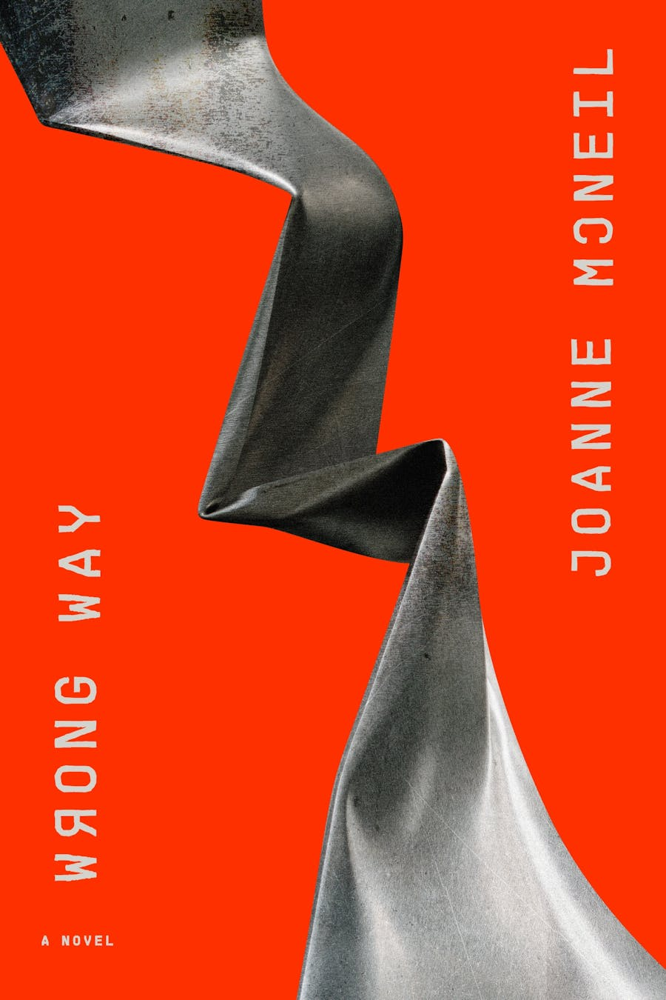
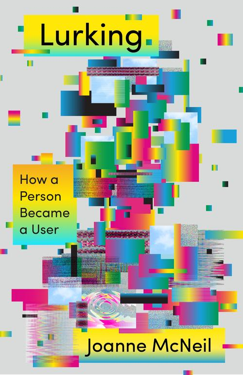

Joanne McNeil is the author of
the novel
WRONG WAY
(2023) and
LURKING
(2020). She
was the inaugural
winner of the Carl & Marilynn Thoma
Art Foundation's Arts Writing Award for an emerging writer. She has
been a resident at Eyebeam, a Logan Nonfiction Program fellow,
recipient of the Warhol Foundation Arts Writers Grant, and an
instructor at the School for Poetic Computation. She grew up in Brockton, MA and is currently based in Los Angeles.
Her
freelance writing
often focuses on the protocols, standards, and history of the networks,
services, and infrastructure like the web and email. Recent features
include
The Rise and Fall of AOL for The Nation,
Silicon Everywhere for The Reboot, and a look at
art-making with “radically small language models” for her column in Filmmaker Magazine.
She's currently working on another nonfiction book, TOO EARLY FOR THE
FUTURE, on the practice and history
of speculating on the future.


contact: joanne
dot mcneil at gmail dot com
Praise
for WRONG WAY:
Top 20 Books of 2023, Esquire
Best Books of 2023, The New Yorker
Endless Bookshelf Book of the Year
Best Tech Books, Los Angeles Times
Esquire Book Club Pick
"Drop everything and find a copy of Wrong Way. This remarkable book is
many things : a deep history of America through the lens of marginal
employment, a social history of isolation, and an economic palimpsest
of the architecture of New England mill towns. Wrong Way is the first
novel by Joanne McNeil, who has a fine ear for American usages and a
sneaky sense of humor evident from the first pages... It’s an engaging
and provocative work, the best book I’ve read this year." — Henry
Wessells,
Endless Bookshelf
“[Wrong Way] gave me a pleasant sense that I was witnessing a literary
sneak attack on the very idea of 'the future' as commonly constructed
in fiction.” — Peter C. Baker,
The New Yorker
“No one understands the dark side of the gifts offered by billionaire
tech gurus better than Joanne McNeil. With Wrong Way, our most
prescient tech critic has turned to fiction, giving us a glimpse of a
near future defined less by wondrous new gadgets and genius AI than by
with the pretense of innovation slapped on ever more alienating work
done by people who remain, despite everything, human. In prose at times
dreamy and lacerating, McNeil shows us what’s coming, and how easily we
might wind up accepting it.” ― Sarah Jaffe, author of
Work Won’t
Love You Back
"A strange, surprising, and sinister kaleidoscope of a novel. Joanne
McNeil, with a dazzling wit and eye for detail, guides us through a
capitalist gig-economy world both relatable and startlingly visionary.
WRONG WAY stands out sparklingly from the crowd of current novels. I
found myself describing it, recommending it, to a person on the subway
I barely knew. I really love this book.” — Scott Heim, author of
Mysterious
Skin
"With her signature mix of intelligent, tender, and engaging prose,
Joanne McNeil has written a brilliant novel in Wrong Way, which
interrogates the promises of the tech utopia through the lives of the
invisible labor behind the hype." — Zito Madu, author of
The Minotaur
at Calla Lanza
“Joanne McNeil’s masterful debut is a powerful example of what the
contemporary novel can and should be in our endlessly perplexing
times.” ― Tim Maughan, author of
Infinite
Detail
"Wrong Way is a chilling portrait of economic precarity, and a
disturbing reminder of how attempts to optimize life and work leave us
all alienated." ― Adrienne Westenfeld,
Esquire
"[Wrong Way] skillfully blends a beautiful literary style — focused on
characterization, inner life, human relations — with a sci-fi story set
in an alternative present / very near future." — This Machine Kills
"[A] smart debut novel...By creating a predicament for her protagonist
that could soon resemble ones we'll face, McNeil creates a compelling
examination of work and our relationship to it." — Booklist
"[A] sharply observed, extremely well-written novel" — Kirkus
"Mordant...the satire is all the more cutting when contrasted with the
all-too-human story of Teresa. A warm beating heart drives this smart
and timely tale." - Publishers Weekly
Interviews:
This Machine Kills
Tech Won't Save Us
Theory of Everything
LA Public Library
Pioneer Works
El Mundo
This is the link to
my headshot. Photo credit: Lizzy Johnston
Subscribe to
my news-y newsletter for events and other updates. Or subscribe to my bloggy newsletter for
recommended books, films, exhibitions, and more.
I write a
column called
"Speculations" for
Filmmaker magazine.
It is a
series of essays on science
fiction films and books and art and other culture. You can read the
archive
here.
Here's a list of some of
my
writing
including fiction, reporting, and criticism.
<<<<<<<<<<<<<<<<<<<<<<<<<<<
I wrote a short radio play
for Unfinished Live in 2021. It's about how the history of the
internet will be told in the future. Here's a
series of video
essays I made called
Just
Browsing. And here's a video of me reading from my short story
Users.
>>>>>>>>>>>>>>>>>>>>>>>>>>>
Here's
me with Philip K Dick (really really
old photo) and a photo of
one of
my best Halloween
costumes.